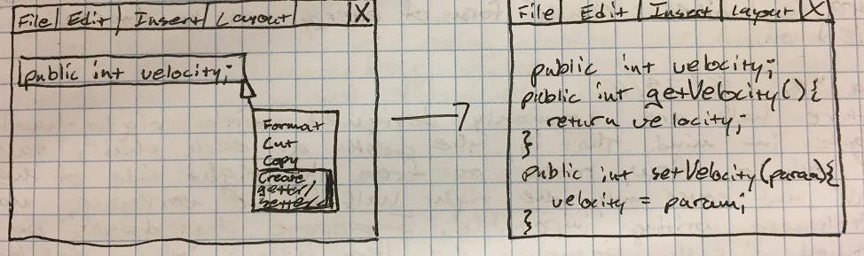

August 23rd, 2016, from my idea notebook
What does it mean to be studying engineering? What does it mean to get a university education?
When I think of engineering, I think of designing the technology that shapes the future. I want to be able to leave my mark on the future during my time on Earth, and studying engineering will enable me to do that. More than just an item on a resume, I think that a university education fosters an intellectual lifestyle. ultimately this leads to a better life.
August 24th, 2016, from my idea notebook
Getters and Setters
In programming, it is often necessary to create a variable, then wrtie methods that retrieve or set that variable, called getters and setters. While these are short lines of code, a program to automatically create these would improve efficiency.

November 9th, 2016
Reflecting on the Election
Here comes my shameless post reflecting on the election. First of all, I would consider myself a right leaning moderate who, in the face of picking between a candidate who I did not believe was fit to be our chief citizen and a candidate who I believe was equally "sketchy" morally and who's policies I generally did not agree with, I voted with my conscience for Hillary Clinton, based on her general professionalism and experience in the field of politics.
That being said, I am not dissatisfied with the results in last night’s elections. While I still do not believe that Donald Trump is the best choice for President, I am excited for the next few years of unified government. No matter your views, the fact is that republicans and democrats both have the best interest of the United States in mind. They simply have different methods of getting there. So, while you may not agree with the policies of conservative leaders, I hope that we can all enjoy the efficiency of our government for at least the next two years.
For those who voted for Hillary Clinton (and I am one of you), you are NOT being oppressed. You are merely a participant in the democratic system, and as such you must accept the social contract that you agree to by being a citizen of this country, i.e., the Constitution. The majority opinion has been expressed, and the basic tenant of democracy is that our government will reflect the will of the majority. Belonging to the minority does not equate to oppression. While this reality may not be preferable to you, that does not mean that it is wrong. As citizens of the United States, we must accept the majority opinion and the government that represents us until we have the opportunity to vote again.
In conclusion, everyone needs to move forward and get on with their lives. Being upset about the result is understandable, but doesn’t solve anything. We have every reason to be optimistic about our future.
December 28th, 2016
Thus far, it's been a relaxing break from my studies at UVA. I think that it is a well-timed month off from all the activity of college life. I've taken time to visit with friends from high school and to catch up with them on the new lives that we've been leading. It's also given me a chance to focus on working on this website and other programming and coding projects that I wouldn't normally have time for in my busy schedule. My only complaint is that things can get a little boring when you have nothing to do, and I really miss my friends from college and look forward to getting back together with them.
Winter break has also been a good opportunity for me to find internship opportunities this summer, and to complete my resume and applications for the open positions. I want to fill my summer with something productive, be it work or an internship or studies. I want to be a part of an engineering firm to get experience in what working in those fields would be like, both to help with future work opportunities as well as to just get a better grasp of what I want to be doing in the future. I think that these experiences would be valuable in determining what path I want to take in my studies and in pursuing a career, and I hope that I will have the opportunity to pursue these opportunities in the summer.
February 13th, 2017
I spent this past weekend at a lacrosse tournament in New Orleans. "The Big Easy" was unlike anything I've ever seen. While I truly don't understand how anything can possibly get done there, as the city appears to be just one big party, it was a very meaningful experience. The city structure reminded me in a way of my trip to Europe last summer. Something about the narrow, crowded roads and the culture that is present there reminded me that the United States actually does have its own culture, even if it isn't nearly as old as that of Europe. This adventure definitely changed my perspective.